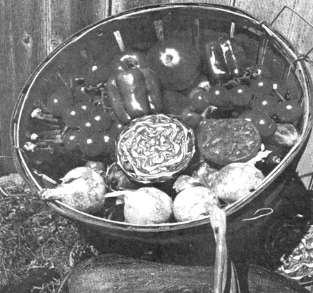
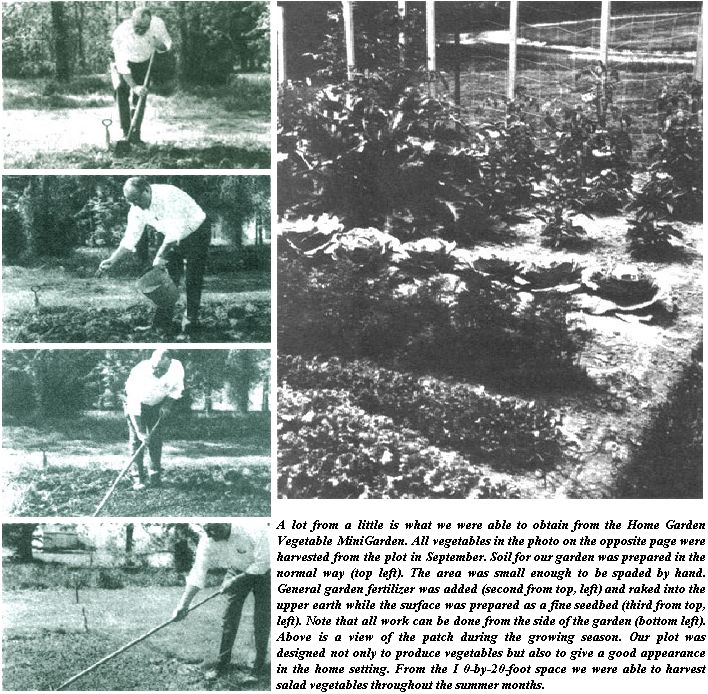
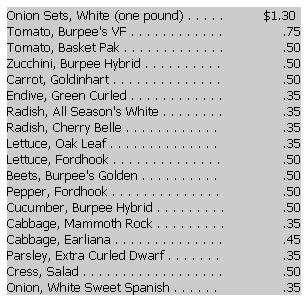
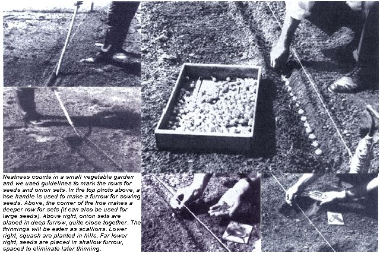
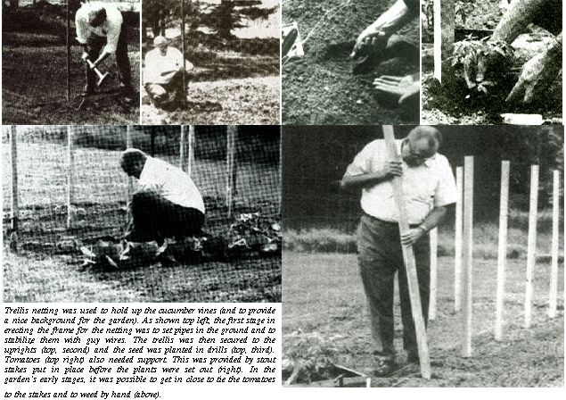
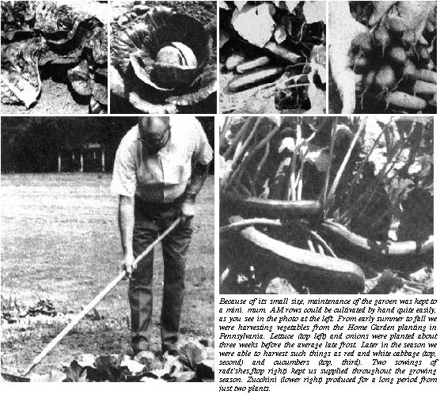
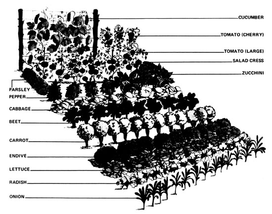

No, you don't need a couple of acres-or a small fortune in seeds, plants and tools-to grow a healthy patch of garden truck. Back in 1970, the staff of Home Garden magazine set out to demonstrate that fact . . . and here's their recipe for good summer eating . . . with all prices brought up to date for the spring of 1974.
Reprinted by permission from Home Garden magazine, Vol. 58, No. 2, February 1971, Copyright 1971, Universal Publishing and Distributing Corp.
Last year about this time the question came up in Home Garden's editorial department: "Why can't we do a story on a vegetable garden small enough to fit in any yard, yet big enough to give a harvest that will make the effort worthwhile?"
After considerable thought, we decided to grow this garden so that we could talk from practical experience.
So, during the 1970 growing season the Home Garden Vegetable Mini-Garden was actually grown ... and proof that it did produce bountiful crops is shown in the photograph at left. All the vegetables in the photograph actually came from the minigarden ... picked by Editor Bill Meachem and his son last September.
The garden we thought about last February was to be just
10 by 20 feet. But growing even a garden of this size was out of the question in our editorial office in midtown Manhattan, New York. Our friends at W. Atlee Burpee Co. came to our rescue. They volunteered not only to help us in the selection of types of vegetables to grow in such a small area, but also to actually grow the garden for us at their Fordhook Farms in Doylestown, Pennsylvania.
Our main purpose in designing and growing the minivegetable garden was to dispel the idea that you need vast areas of ground to grow vegetables. Even a city gardener can often find a plot 10 by 20 to keep him in fresh vegetables for almost six months . . . at a cost of less than $ 10.00 for seed.
The vegetables we used were typical "small-garden" kinds and all seeds and onion sets could be purchased for $8.95. Following are the varieties that were used in our experimental planting.
The first reaction many old-hand vegetable growers might have is that our harvests are too small to be practical. Our purpose was to provide fresh vegetables for immediate table use, and we did not expect to reap harvests that would allow.
for canning or freezing. However, at harvest time last fan, our tomato crop was abundant enough so that a few jars could have been put up before the frost demolished everything.
For all practical purposes, ours is primarily a salad garden. Everything we grew could be used fresh from the garden with no preparation. (The only exception would be the beets, but we have several people on the editorial staff who feel that pickled beets are a "must" in the summer salad.)
Some old pros may say that we have things too cramped and there is not enough room between the rows. Our rows may be quite dose together, but since the garden is only 10 feet wide it can be cultivated from the side, and outside of harvesting there is no need for wide rows which are used for wheel hoes or even power cultivators.
Our garden received full sunlight all day. This is a requirement for all vegetables and it is difficult to obtain any appreciable harvest unless the plants do get ample fight.
Although our garden was prepared with a power tiller it is small enough to be spaded by hand. The area was formerly a lawn and when it was tilled, all the remaining sod was worked in as a form of organic matter. After tilling, the area was fertilized at the same rate as the trial gardens at Fordhook Farms.
The garden was almost fully planted at all times during the season. This was accomplished by a succession of plantings. Where there were quick-growing early crops, they were followed by another sowing. Several crops, such as the cucumbers, tomatoes, peppers, zucchini and cabbages were in place all during the summer, but most of these provided pickings over a long period.
TOMATOES
We used two different varieties of tomatoes. For the main crop we grew Burpee's VF. This variety is well adapted for home garden use because it is resistant to the two most common tomato diseases ... verticillium and fusarium. Plants were started indoors and the plants set out. It may be difficult to find started plants of some of these varieties so it may be necessary to start your own. But because we only used six plants, it is not beyond the efforts of a homeowner to start them. Also bear in mind that it's much better not to start them too early. For mid-May planting outdoors you can start seedlings indoors as late as April 1.
We also used three plants of a small cherry tomato-Basket Pak- -which bear heavily and are an ideal salad addition.
In addition to the varieties that we grew, some substitutes for VF could be Park's Whopper, Terrific or Burpee's Big Boy.
Substitutes for the Basket Pak tomato would be Red Cherry. Small Fry or Sugar Lump (which has a distinctive
ZUCCHINI
This may be a questionable vegetable in our small garden, but it proved to be one of the best performers. Seed was direct-sown on May 15 and was bearing profusely from only two plants starting the first week in July and continuing nonstop right into September.
The variety we used-and type we recommend-is the bush zucchini. This is an ideal vegetable for a small garden because the young fruits can be eaten raw in salads as a companion to, or substitute for, cucumbers. Later in the year the larger fruits can be cooked conventionally as squash.
Other varieties that could be used instead of Burpee's Hybrid are Ambassador or Chefini
CUCUMBERS
At the outset we did not consider cucumbers because of the space the plants required. However, we were convinced by our friends at Burpee that they should be included. Instead of letting them sprawl, we had them placed on a trellis netting (Train-etts). This was placed in the back of the garden and also acted as a background.
The cucumbers proved to be a good crop, even though the harvest 'may not have been as large as we had hoped, but certainly adequate from one short row. Vines continued to bear until frost.
We used the variety Burpee Hybrid. Others that could have been grown include Burpless, Comanche or one of the smaller pickling kinds.
PEPPERS
Perhaps we're old-fashioned, but we felt that in a small vegetable garden a few pepper plants should be included because they add so much flavor to summer salads. (The cooks on our staff said that we didn't need too many peppers to flavor the salad bowl so we used only four.)
The variety grown was Burpee's Fordhook. Others might be Bell Boy or Parkwonder F1 Hybrid.
CABBAGE
Eight heads of cabbage-the number we planned for our garden-may not feed an army, but for a family of four they would provide a few servings of really fresh slaw.
We felt that a vegetable garden should have some color so we put in both green and red cabbage. As a substitute for the Mammoth Red Rock that we grew, we could also have grown Red Acre.
The green cabbage we grew was Earliana. Some other early cabbages that would have also given us similar results are Stonehead and Copenhagen Market.
BEETS
A garden wouldn't be normal if there wasn't some failure.
Ours was no exception. We made our succession sowings of beets, but when they came to a size indicating that they were established, a gopher decided to eat them for dinner. But we meant well. In another year we perhaps could fulfill our plan.
We selected the new Golden Beet for our garden. The reason for this is that this variety does not bleed like the red beet and is especially good for salads. However, if we were inclined toward red kinds we could also have used Ruby Queen or Detroit Dark Red.
LETTUCE
The mainstay of a fresh or salad vegetable garden is lettuce. We used two varieties: one was early (Oak Leaf, 40 days to maturity) and the other late (Fordhook, 78 days to maturity). The Oak Leaf was started early and transplanted to the garden on April 24 and was ready for picking by May IS.
However, we were harvesting lettuce for table use even earlier as instead of picking the entire plant we took the outer leaves from several plants. We suggest gardeners doing this as it encourages the inner leaves to produce more and it also furnishes salad greens over a much longer period.
Following our original plan, we had two sowings of the lettuces. The second followed the harvest of endive. This gave us the final pickings in the fall.
In place of the heat-resistant Oak Leaf Lettuce we could also have used Salad Bowl which matures in 45 days. This, too, resist heat to some degree. For a later lettuce we could also have planted Buttercrunch (75 days) or Great Lakes, a heading variety which matures in 90 days.
RADISHES
A quick crop throughout the season is the radish. Here again we used two varieties: Cherry Belle, which only takes 22, days to mature, and All Season's White, which matures in 45 days. You can see, then, that when half a row of each was sown, we had quite a long season of picking.
We also made a second sowing of radishes after the lettuces matured. This gave us radishes throughout the entire growing season. This is a good crop for children because it gives them quick, sure results.
In addition to the quick-maturing Cherry Belle we could have used the variety Champion (28 days). For a substitute white we could also have grown White Icicle, which also matures in 28 days.
If we were using two quick-maturing varieties we would have made succession plantings.
CARROTS
Although we grew the carrot Goldinhart, we could also have planted Park's Munching,, Sweetheart or Red Cored Chantenay.
ENDIVE
For an additional green we planted two sowings of endive Green Curled. This makes an excellent salad green and matures in about 65 days. You may also find this variety listed as Giant Fringed Oyster in some catalogs.
ONIONS
No salad is complete without onions. We used both sets and seeds. Again, we harvested all season by using the younger plants as scallions.
SEASONING
As a final gesture, we added two little plantings of extra spice for the salad, cress and parsley. They only occupied a small amount of space, but were well worth the effort.
PROOF IN EATING
The success of our garden was in the eating. On a small space we proved that it is possible to grow a generous supply of fresh vegetables. Also we enjoyed vegetables that were grown the way we wanted them to be grown, without unnecessary chemicals in the soil or on the plants.
We feel that this garden was a great success and can honestly recommend the plan and variety selection to our readers.
|
 |
 |
 |
|
 |
 |
 |
|
 |
|
|